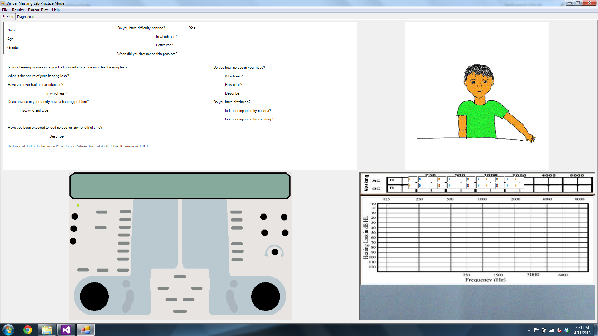
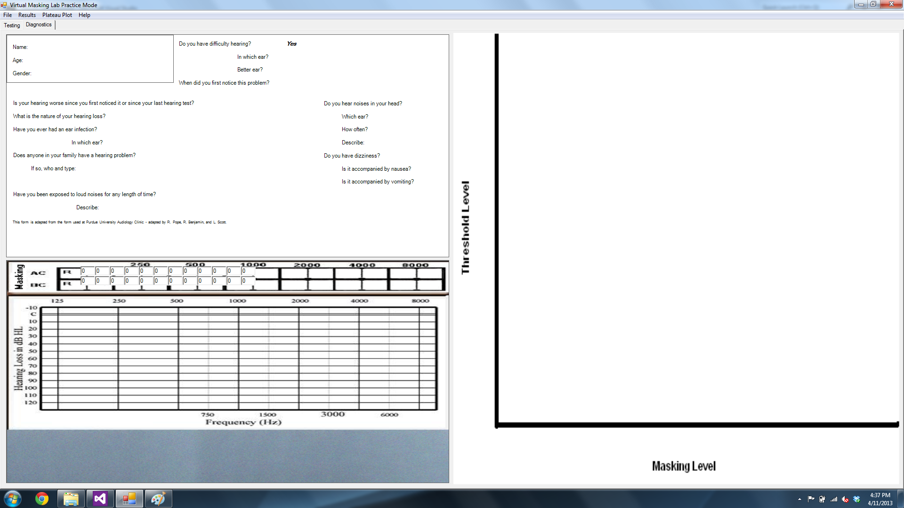

Virtual Lab
Allowing students to apply the concepts they have learned in the classroom to a clinical setting without the need for an actual patient.
Introduction
- Project Leader:
- Robert Pope
- Team Members:
- Robert Schwieterman
- Michael Goldman
- John Laswell
- Project Partner:
- Dr. Joshua Alexander, Ph.D.
CCC-A, Assistant Professor - Dept. of Speech, Language, & Hearing Sciences
- Dr. Joshua Alexander, Ph.D.
Project History
The Virtual Project has been worked on close to a decade now with the first completed version being delivered in the Fall 2010 semester.
The base criteria were first determined by Dr. Novak. The criteria for this semester was developed by our team in coordination with Dr. Lata Krishnan and Dr. Alexander. The implementation and discussion of these overarching criteria will be discussed in the design section.
Project Purpose
Virtual Lab was built to provide students in the field of Speech, Language, and Hearing Sciences the ability to practice diagnostic testing, such as masking, with virtual patients.
Recently filled the role of a tool used by graduate students to practice concepts specific to masking. This allowed the students to simulate specific patient case histories, without requiring actual patients.
Semester Goals
The goal for this group is to improve upon the delivered version of the program by updating the graphical user interface (GUI) of the program and fixing some bugs in the code along the way.
- Currently uses floating windows to display modules and information
- Windows cannot be resized or hidden, workspace becomes cluttered
- Floating windows will be replaced with fixed panels
- Currently all windows are present on one workspace
- Workspace becomes cluttered, not all windows needed at the same time
- A two tab system will be implemented, each with only the useful panels
Testing Panel

Diagnostics Panel

Two Tab Approach
After seeing one of the audiology professors use the program, there was a clear separation from when she was testing to when she was diagnosing. We also noticed which particular parts of the application she was using at each stage. In order to reduce clutter of windows on the screen, we decided to make a tab for each stage with only the necessary items on the screen at any point in time.
Panel Approach
In order to keep all portions of the program locked within their position on their specific tab, we chose to make all objects that were previously of the Form class into objects of the Panel class. To do this, we went through the existing code changing a few things here and there to eliminate all traces of a Form and create a Panel instead. The challenge here was having to look up what methods exist within the Panel class and compare them to methods of the Form class. Most lines could be left as they were, but some methods of the Form class do not exist within the Panel class and thus we had to find the closest thing we could use and try to replace it. Otherwise, remove that line of code all together. This was time consuming and included many error messages for calling methods that don't exist.
TableLayoutPanel Format for Tabs
We ran into issues with setting the position of the Panels within the Tabs and found out about the TableLayoutPanel which allows you to set the number of rows and columns to divide a space into as well as set the size of each. We used this in the Tabs to allow us to simply fill a section of the table with a Panel.
We were even considering using these within the Panels to help us align and re-size all the elements of the Panels. Or perhaps making the Panel itself into a TableLayoutPanel. This can be discussed next semester and worked on as soon as possible.